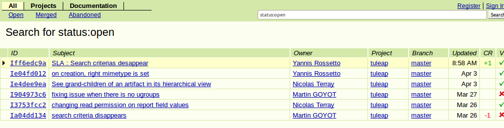
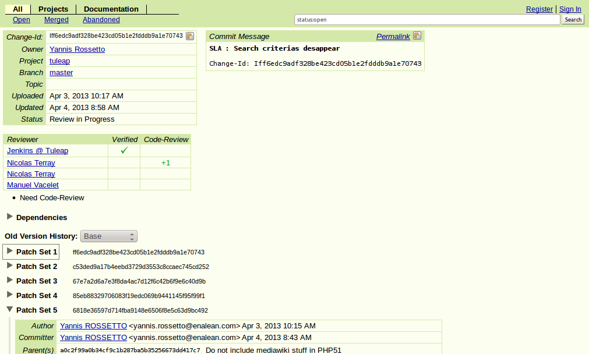
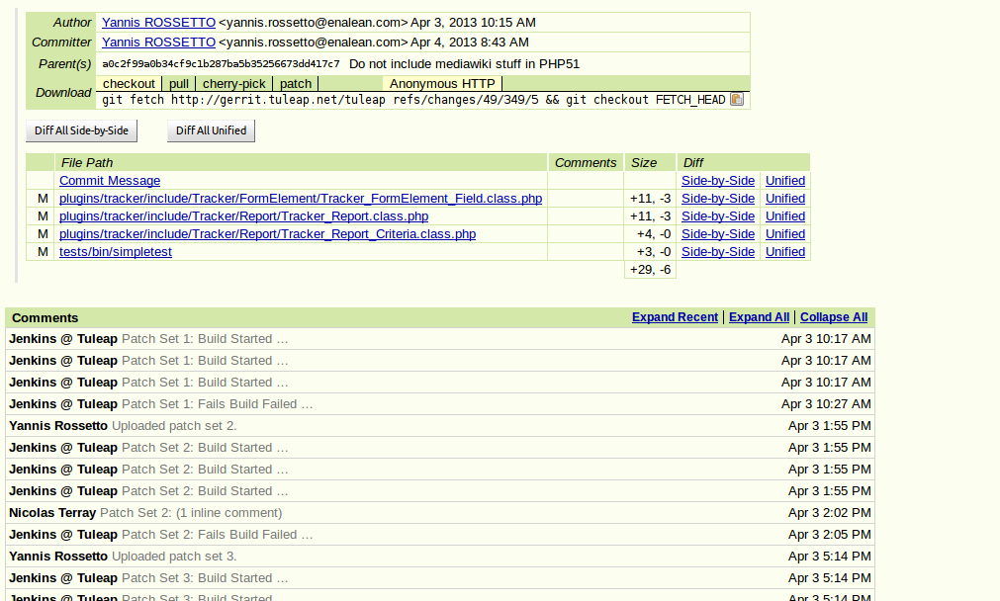
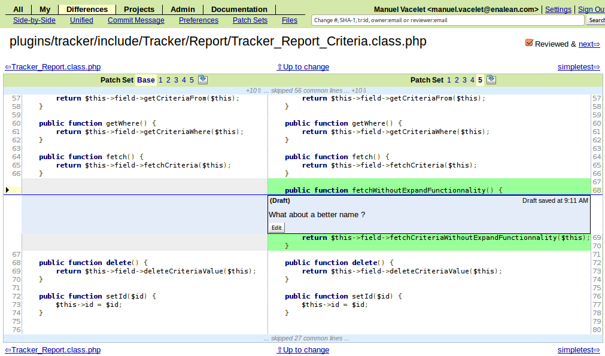
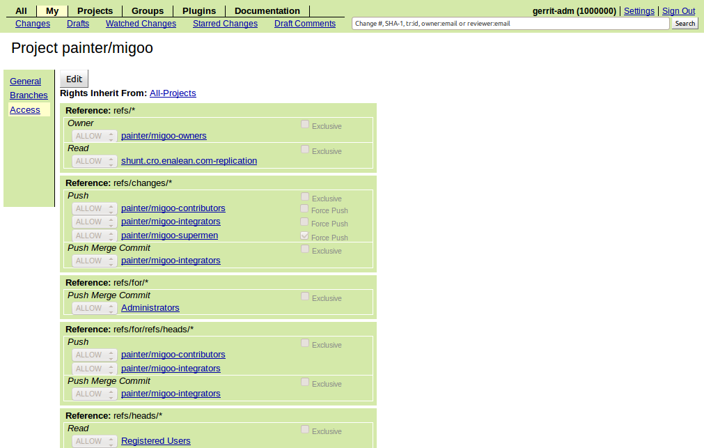

Oh My Code Review!
A journey with Gerrit
Why to review code?

Gerrit

http://code.google.com/p/gerrit/
- Comes from Android project
- Git only
- users: Eclipse, QT, Mediawiki, Sony, Motorola, Google, SAP, ...
Gerrit workflow

Reviews dashboard
One review
Patch
Diff, comments
Push for review
git push ssh://vaceletm@gerrit.tuleap.net:29418 HEAD:refs/for/master- One commit == One review
- Shape your commits (history rewriting!)
Access control
General comments
- Powerful (access, rules)
- 2.6 + JGit: more efficient than raw access
- High learning curve
Questions?
PS: Enalean is hiring!